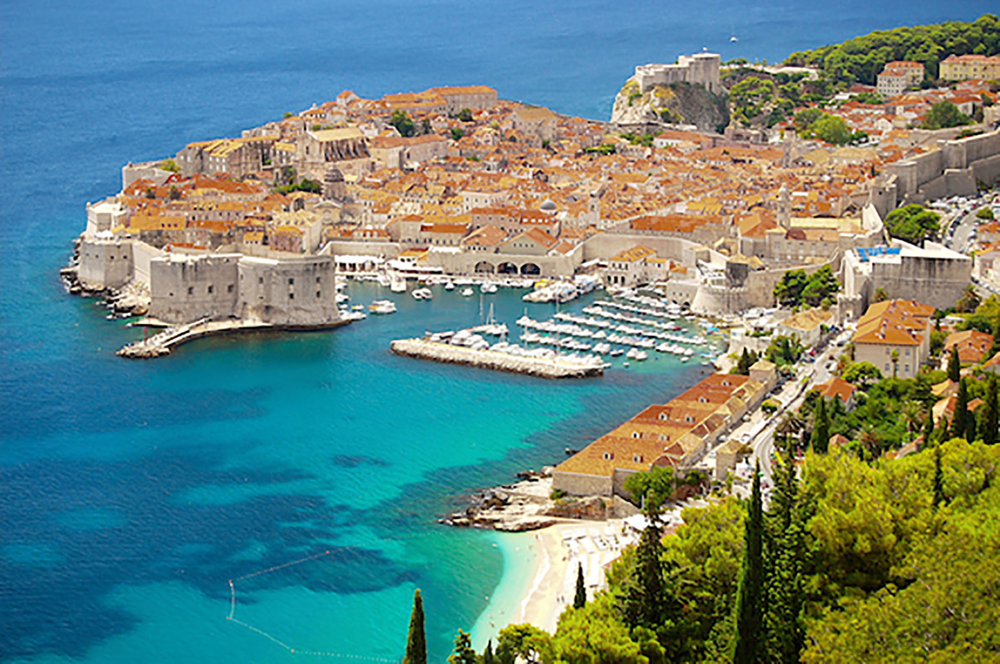

Kroatien är ett land som jag besökt en hel del före covid kom till. Det är ett varmt land med många sevärdigheter och destinationer. Jag har också några släktingar där!
Jag har gjort lite C++, C#, HTML JavaScript och CSS tidagare, dock var det ett tag jag kodade i HTML! Jag har alltid haft ett intresse i kodande och spelade en del spel där man kunde koda vad som skulle hända, fast väldigt simplistiskt.
här är en lista av olika saker jag gillar att göra: